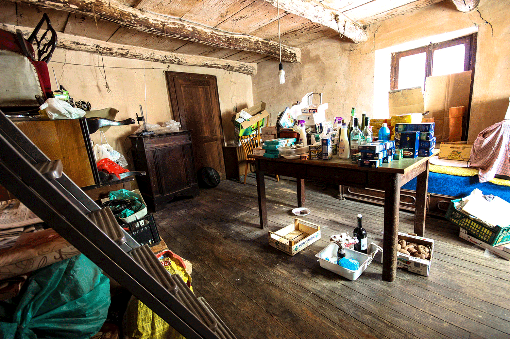

'Nem
Intervention Series. (2010 - Ongoing). Diverse media.
The project ‘Nem. – ‘let’s go’ in the local dialect – took its cue from the geological isolation of Oggiogno’s 16 inhabitants started in 2010.
‘Nem.’s first intervention consisted of a series of invitations to a non-resident public to walk towards Oggiogno through the mountain path connecting the village to public services. A central aim being to amplify how the mountain path functioned in that moment in time as a physical platform in which the exchange of information regarding the crisis was taking place.
‘Nem.’s second intervention started in 2013 and it is ongoing. An aluminium time capsule travels the houses of the inhabitants of Oggiogno. Aluminium was chosen as a material because its resilience exemplifies the status of the village through qualities such as resistance and strength. Each host decides to hold the capsule for a variable amount of time. While hosted, the capsule stratifies not only ephemeral contents (i.e. the scent of a fireplace), time and affectivity but it also forms a portrait of the contemporary history of Oggiogno. In this framework, the capsule operates as nomadic-micro-platform.
The outcome of this intervention is an ongoing photo series and a publication foreseen for 2019.